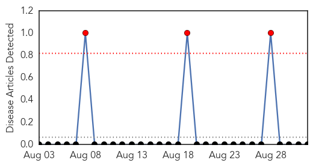

Measles
30-Day Web Trend
0 alerts, 1 warnings

30-Day Twitter Trend
0 alerts, 0 warnings

Article Locations

Article Confidences

Top Articles:
- 0.971
- Berkeley: Health care officials hope more vaccinations stop spread of measles
- 0.966
- Measles Health Alert
- 0.933
- Measles confirmed in UC Berkeley student, community encouraged to vaccinate
- 0.884
- Health Officials Confirm a UC Berkeley Student Has Measles
- 0.864
- Pennsylvania vaccination rates among worst in nation
- 0.860
- DRC: Katanga measles epidemic keeps worsening - Democratic Republic of the Congo
- 0.847
- Back-to-school preparations often exclude vaccines
- 0.798
- Berkeleyside
- 0.786
- UC Berkeley measles patient traveled to Contra Costa County while contagious
- 0.720
- Incubate learning, not infections
- 0.679
- Washington woman’s measles death is first in US since 2003
- 0.651
- UC Berkeley student tests positive for measles
- 0.627
- In Our View: Keep Our Students Safe
- 0.513
- UC Berkeley student diagnosed with measles Monday exposed community members
Top Tweets:
-
No tweets found for Sep 01, 2015
Yellow Fever
30-Day Web Trend
3 alerts, 0 warnings

30-Day Twitter Trend
0 alerts, 0 warnings

Article Locations

Article Confidences

Top Articles:
-
No articles found for Sep 01, 2015
Top Tweets:
-
No tweets found for Sep 01, 2015